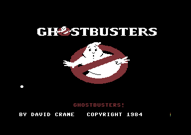

<meta charset="utf-8">
<meta name="viewport" content="width=device-width, initial-scale=1">
<title>{{title}}</title>
<link rel="preconnect" href="https://fonts.googleapis.com">
<link rel="stylesheet" href="https://fonts.googleapis.com/css2?family=Lato:wght@400;700;900&family=IBM+Plex+Mono:wght@400;500&display=swap">
<link rel="stylesheet" href="reference/ghostbusters-page.css">
<!-- tabs -->
<header class="hero">
  <p class="eyebrow">{{platform}} · {{year}} · {{publisher}}</p>
  <h1>{{title}}</h1>
  <p class="sub">David Crane's film tie-in for Activision, built in six weeks on the bones of an unfinished driving game, and a UK number one in early 1985.</p>
</header>
<main class="wrap">
<section id="game">
  <p class="fig">01 · The game</p>
  <h2 class="t">Run a ghost-catching business, and end with more money than the bank lent you</h2>
  <p>In <i>Ghostbusters</i> the bank lends you $10,000 to start a franchise.<sup class="fn"><a href="about.html#src-1" title="The Commodore 64 manual">1</a></sup> You spend it on a car and equipment, then drive round a city map to buildings where Slimers have moved in, trap them for fees, and bring the traps back to headquarters. All the while the city's PK energy climbs, the Marshmallow Man stomps on buildings, and two wanderers, the Keymaster and the Gatekeeper, head for the Temple of Zuul.</p>
  <p>When they meet there, the bank checks your balance. Less than you started with ends the game. Otherwise the car goes to Zuul, where two of your three men must slip past the Marshmallow Man into the building. Finish with more money than you started with and the game gives you an account number that carries the money into the next game.</p>
  <figure class="overview-shot"><figcaption>The title screen. The theme plays while a ball bounces along the lyrics.</figcaption></figure>
  <p class="overview-links"><a href="play.html">Play Ghostbusters</a><a href="gameplay.html">See how a game goes</a><a href="levels.html">Explore the city map</a></p>
</section>

<section id="makers">
  <p class="fig">02 · The makers</p>
  <h2 class="t">David Crane's design, with help from across Activision</h2>
  <p>The game names one person. Its title screen says DESIGNED BY DAVID CRANE COPYRIGHT 1984, and the cassette manual credits nobody.<sup class="fn"><a href="about.html#src-2" title="The cassette manual, scanned on the Internet Archive">2</a></sup> Crane had made <i>Pitfall!</i> for the Atari 2600 two years earlier.</p>
  <p>Other roles come from later sources. MobyGames lists Adam Bellin for additional programming and Hilary Mills for graphics.<sup class="fn"><a href="about.html#src-3" title="MobyGames credits">3</a></sup> Wikipedia and the C64-Wiki credit the music to Russell Lieblich, arranging Ray Parker Jr.'s theme.<sup class="fn"><a href="about.html#src-4" title="Wikipedia, Ghostbusters (1984 video game)">4</a></sup><sup class="fn"><a href="about.html#src-5" title="C64-Wiki, Ghostbusters">5</a></sup> Wikipedia, citing <i>Retro Gamer</i> 25 (2006), says the sing-along with the bouncing ball was added at the last minute by Garry Kitchen, Dan Kitchen, and Alex DeMeo.<sup class="fn"><a href="about.html#src-4" title="Wikipedia, Ghostbusters (1984 video game)">4</a></sup></p>
  <p>Who spoke the speech is not known. Asked about it in <i>Retro Gamer</i>, Crane said he did not clearly remember.<sup class="fn"><a href="about.html#src-6" title="Retro Gamer, In the Chair with David Crane">6</a></sup> He did remember the program: "I had written an audio digitiser and driver for the C64". The <a href="music.html#speech">Music and speech</a> tab shows how that driver works.</p>
</section>

<section id="six-weeks">
  <p class="fig">03 · Six weeks</p>
  <h2 class="t">A driving game already in the works became Ghostbusters</h2>
  <p>A film tie-in has to reach the shops while the film is still showing. Activision gave the game six weeks where nine months was normal, and Columbia Pictures supplied the script and some storyboards but no idea of what the game should be.<sup class="fn"><a href="about.html#src-4" title="Wikipedia, Ghostbusters (1984 video game)">4</a></sup> <i>Retro Gamer</i>'s interview with Crane captions it "Turned around in just six weeks".<sup class="fn"><a href="about.html#src-6" title="Retro Gamer, In the Chair with David Crane">6</a></sup></p>
  <p>The answer was a game Crane already had in progress, <i>Car Wars</i>. As he told <i>Retro Gamer</i> in 2010, "Car Wars gave Ghostbusters the economy, the car customisation and the driving scene where the player could vacuum up ghosts."<sup class="fn"><a href="about.html#src-7" title="Games That Weren't, Car Wars">7</a></sup> The code still reads that way: a bank balance that decides the ending, a shop that loads equipment into a car, and a road where the ghost vacuum is the only thing to do.</p>
</section>

<section id="reception">
  <p class="fig">04 · Reception</p>
  <h2 class="t">Reviewers praised the sound, and it topped the charts</h2>
  <p>British magazines reviewed it at the turn of 1985, and the presentation was what they wrote about. In <i>Personal Computer Games</i> 14, January 1985, Chris Anderson wrote that "the presentation and initial impact of this program are unbelievable" and that "the music and speech could hardly be bettered". He added that the game "might not work, were it not for the fact that it succeeds so well in recreating the feel of the film".<sup class="fn"><a href="about.html#src-8" title="Personal Computer Games 14, as transcribed by the Commodore Format Archive">8</a></sup></p>
  <p><i>Your Commodore</i> 7, April 1985, called it "impressively programmed" and "Recommended, even though you don't get a free Sigourney Weaver with every cassette". The magazine said the speech was "done using only the basic 64 sound chip filters: no additional hardware is required".<sup class="fn"><a href="about.html#src-9" title="Your Commodore 7, as transcribed by the Commodore Format Archive">9</a></sup> The second half is right. The first is not quite: the code plays the speech through the sound chip's volume register, not its filters (<a href="music.html#speech">Music and speech</a>).</p>
  <p>In the United States the newsletter <i>Computer Entertainer</i> had the C64 version at number 6 in its December 1984 top ten, under the headline "Ghostbusters Take Over Europe!".<sup class="fn"><a href="about.html#src-10" title="Computer Entertainer, December 1984">10</a></sup> In the UK it topped the chart from January to March 1985.<sup class="fn"><a href="about.html#src-4" title="Wikipedia, Ghostbusters (1984 video game)">4</a></sup></p>
</section>

<section id="versions">
  <p class="fig">05 · Other versions</p>
  <h2 class="t">The C64 version came first</h2>
  <p>Ports followed for the ZX Spectrum, Amstrad CPC, Apple II, Atari 8-bit, MSX, IBM PCjr, Atari 2600, NES, and Master System, most of them made without Crane, and a budget re-release on Mastertronic's Ricochet label in 1988.<sup class="fn"><a href="about.html#src-4" title="Wikipedia, Ghostbusters (1984 video game)">4</a></sup></p>
</section>

<section id="explore">
  <p class="fig">06 · Inside the game</p>
  <h2 class="t">Explore how Ghostbusters works</h2>
  <p>Each tab takes one part of the game apart, from the game's own code.</p>
  <ul class="tabs-guide">
    <li><a href="play.html"><b>Play</b></a>: the whole game, ported from its own code.</li>
    <li><a href="gameplay.html"><b>Gameplay</b></a>: the shop, the drive, the bust (<code>$85D4</code>), the Marshmallow Man, Zuul and its two endings, and the account number that saves your money.</li>
    <li><a href="controls.html"><b>Controls</b></a>: why the joystick goes in port 1, and the keys that work in play.</li>
    <li><a href="levels.html"><b>Map</b></a>: the city's buildings and their clocks (<code>$73BD</code>), PK energy, and the meeting at Zuul that ends the game.</li>
    <li><a href="graphics.html"><b>Graphics</b></a>: every sprite in the game, unpacked from its own data, and the interrupt that draws each frame.</li>
    <li><a href="music.html"><b>Music and speech</b></a>: the sing-along and five phrases of speech, played through ports of the game's own players (<code>$93E1</code>, <code>$F080</code>).</li>
    <li><a href="discoveries.html"><b>Discoveries</b></a>: an eighth piece of equipment nobody can buy, a phrase the game never says, four bugs, and an ending the guides get wrong.</li>
    <li><a href="source.html"><b>Source code</b></a>: the whole game disassembled and annotated.</li>
  </ul>
</section>
</main>
<footer style="margin:16px 0 0;padding:22px var(--gx) 0;border-top:1px solid #e0ded8;font-family:'IBM Plex Mono',ui-monospace,Menlo,monospace;font-size:12px;color:#80838a"><a href="https://github.com/gamesexplained/gamesexplained" aria-label="GitHub" style="display:inline-flex;align-items:center;justify-content:center;width:26px;height:26px;margin-left:8px;border:1px solid #e0ded8;border-radius:7px;background:#ffffff;color:#80838a;vertical-align:middle"><svg width="15" height="15" viewBox="0 0 24 24" fill="currentColor" aria-hidden="true"><path d="M12 .297c-6.63 0-12 5.373-12 12 0 5.303 3.438 9.8 8.205 11.385.6.113.82-.258.82-.577 0-.285-.01-1.04-.015-2.04-3.338.724-4.042-1.61-4.042-1.61C4.422 18.07 3.633 17.7 3.633 17.7c-1.087-.744.084-.729.084-.729 1.205.084 1.838 1.236 1.838 1.236 1.07 1.835 2.809 1.305 3.495.998.108-.776.417-1.305.76-1.605-2.665-.3-5.466-1.332-5.466-5.93 0-1.31.465-2.38 1.235-3.22-.135-.303-.54-1.523.105-3.176 0 0 1.005-.322 3.3 1.23.96-.267 1.98-.399 3-.405 1.02.006 2.04.138 3 .405 2.28-1.552 3.285-1.23 3.285-1.23.645 1.653.24 2.873.12 3.176.765.84 1.23 1.91 1.23 3.22 0 4.61-2.805 5.625-5.475 5.92.42.36.81 1.096.81 2.22 0 1.606-.015 2.896-.015 3.286 0 .315.21.69.825.57C20.565 22.092 24 17.592 24 12.297c0-6.627-5.373-12-12-12"/></svg></a><a href="https://discord.gg/3V9GWyRDWV" aria-label="Discord" style="display:inline-flex;align-items:center;justify-content:center;width:26px;height:26px;margin-left:8px;border:1px solid #e0ded8;border-radius:7px;background:#ffffff;color:#80838a;vertical-align:middle"><svg width="15" height="15" viewBox="0 0 24 24" fill="currentColor" aria-hidden="true"><path d="M20.317 4.3698a19.7913 19.7913 0 00-4.8851-1.5152.0741.0741 0 00-.0785.0371c-.211.3753-.4447.8648-.6083 1.2495-1.8447-.2762-3.68-.2762-5.4868 0-.1636-.3933-.4058-.8742-.6177-1.2495a.077.077 0 00-.0785-.037 19.7363 19.7363 0 00-4.8852 1.515.0699.0699 0 00-.0321.0277C.5334 9.0458-.319 13.5799.0992 18.0578a.0824.0824 0 00.0312.0561c2.0528 1.5076 4.0413 2.4228 5.9929 3.0294a.0777.0777 0 00.0842-.0276c.4616-.6304.8731-1.2952 1.226-1.9942a.076.076 0 00-.0416-.1057c-.6528-.2476-1.2743-.5495-1.8722-.8923a.077.077 0 01-.0076-.1277c.1258-.0943.2517-.1923.3718-.2914a.0743.0743 0 01.0776-.0105c3.9278 1.7933 8.18 1.7933 12.0614 0a.0739.0739 0 01.0785.0095c.1202.099.246.1981.3728.2924a.077.077 0 01-.0066.1276 12.2986 12.2986 0 01-1.873.8914.0766.0766 0 00-.0407.1067c.3604.698.7719 1.3628 1.225 1.9932a.076.076 0 00.0842.0286c1.961-.6067 3.9495-1.5219 6.0023-3.0294a.077.077 0 00.0313-.0552c.5004-5.177-.8382-9.6739-3.5485-13.6604a.061.061 0 00-.0312-.0286zM8.02 15.3312c-1.1825 0-2.1569-1.0857-2.1569-2.419 0-1.3332.9555-2.4189 2.157-2.4189 1.2108 0 2.1757 1.0952 2.1568 2.419 0 1.3332-.9555 2.4189-2.1569 2.4189zm7.9748 0c-1.1825 0-2.1569-1.0857-2.1569-2.419 0-1.3332.9554-2.4189 2.1569-2.4189 1.2108 0 2.1757 1.0952 2.1568 2.419 0 1.3332-.946 2.4189-2.1568 2.4189Z"/></svg></a><br>© Games Explained contributors. Write-ups, facts and symbol maps are available under <a href="https://creativecommons.org/licenses/by-sa/4.0/" style="color:#1f5fa8;text-decoration:none">CC BY-SA 4.0</a>; code under <a href="https://opensource.org/licenses/MIT" style="color:#1f5fa8;text-decoration:none">MIT</a></footer>
